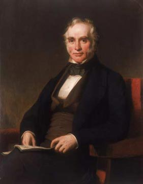
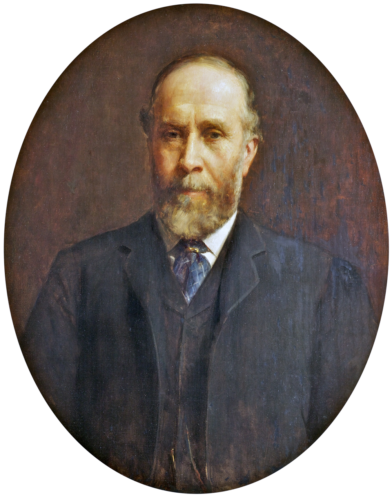

George Holt of Liverpool
The Holt family’s prominence in Liverpool began with Oliver Holt (1752–1830), a woollen manufacturer from Rochdale
whose son, George Holt Senior, moved to Liverpool in 1807 to apprentice as a cotton broker. George eventually
established the family as a major force in the city's commerce and banking. The most famous residence associated
with the family is Sudley House in Mossley Hill, which was purchased by George Holt Junior in 1882. The family lived
in Edge Lane and West Derby before settling at Sudley, where they became noted for their extensive art collection and philanthropy.
The family’s shipping legacy was primarily built by Oliver’s grandsons, George Holt Junior and Alfred Holt. George
Junior co-founded the Lamport & Holt Line in 1845, which specialized in trade with South Africa, India, and
South America, eventually pioneering the transport of frozen meat from Argentina. In 1865, Alfred and his
brother Philip founded the Ocean Steam Ship Company, famously known as the Blue Funnel Line. This company
became the leading British shipping line trading with China, operating a legendary fleet of cargo liners known for
their reliability and distinctive tall blue funnels.
The Blue Funnel Line’s main route ran from Liverpool through the Suez Canal to the Far East, serving ports such as
Penang, Singapore, Hong Kong, Shanghai, and later Japan and Australia. It did not regularly stop at every port
listed in its trading network.
| 1865–1869 | Liverpool → Mauritius → Penang → Singapore → Hong Kong → Shanghai | Early expansion into China and Malaya |
| 1869–1980 | Liverpool → Suez → Penang → Singapore → Hong Kong → Shanghai → Japan | Main long‑term route via the Suez Canal |
| 1894–1973 | Singapore → Batavia (Jakarta) → Darwin → Fremantle → Melbourne → Sydney | Australian extension of the Far East service |
| 1901–1956 | Glasgow/Liverpool → Cape Town → Australia | Occasional southern route |
Alfred Holt was the most famous member of the renowned Holt shipping dynasty of Liverpool.
Extract from the Mersey Magazine of the Mersey Dock Board October 1924.
The Makers of Modern Liverpool,
The Holt family and
part 2 three generations
part 3

George Holt Senior
Liverpool cotton-broker and merchant. Died 1861. Oil on canvas, 1851, artist unknown
Public domain via Sudley House
Author unknown (Philip Westcott was commissioned to paint a replica in 1864.)

Alfred Holt (13 June 1829 – 28 November 1911)
A British engineer, ship owner and merchant. He lived at Crofton, Sudley Road,Aigburth in Liverpool.
Oil on canvas, ca. 1880–1903, by Robert E. Morrison
Public domain via Sudley House